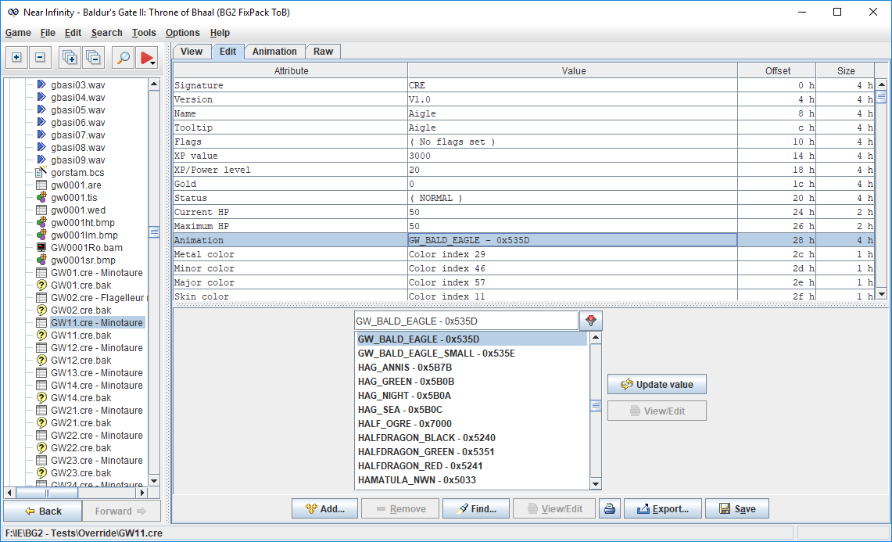
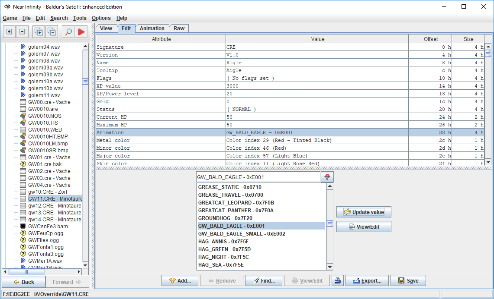

Un mod de Spellhold Studios pour Baldur's Gate II : ToB, Baldur's Gate Trilogy, Tutu, Baldur's Gate: Enhanced Edition, Siege of Dragonspear, Baldur's Gate II: Enhanced Edition, Icewind Dale: Enhanced Edition et EET.
Auteure : Erephine • Code WeiDU : Miloch, Sam et Gwendolyne
Le mod Infinity Animations modifie le moteur du jeu Baldur's Gate II : ToB de façon à ce qu'il dispose d'animations supplémentaires de créatures et de personnages (appelées « slots d'animation » dans ce document [NdT : « emplacements » ou « index »]). Il fonctionne ainsi comme une base de données centralisée, utilisable par quiconque souhaite ajouter de nouvelles animations de créature dans le jeu sans être confronté à des problèmes de conflits et d'incompatibilité avec d'autres mods.
Ce document est destiné aux moddeurs qui souhaitent rendre leur mod compatible avec Infinity Animations. Il fonctionne comme un tutoriel et s'efforce de vous guider à travers chaque étape nécessaire pour accomplir ces tâches.
Infinity Animations : Note pour les moddeurs > De quoi s'agit-il ? •HAUT DE PAGE
Fichier ANIMATE.ids
Dans un monde parfait, Infinity Animations devrait être installé très tôt comme un pack correctif qui fonctionnerait comme une base de données centralisée, utilisable pour ajouter de nouvelles animations de créature dans le ou les utiliser dans un mod. Malheureusement, comme il a été conçu après la première génération de mega-mods qui écrasaient les fichiers du jeu, notamment pour résoudre les conflits de slots d'animation et rétablir les animations de base que les mega-mods avaient modifiées, il doit être installé après ces mega-mods, au moins jusqu'à ce que leurs auteurs les mettent à jour pour tirer parti de toutes les possibilités offertes par Infinity Animations...
En attendant ce jour merveilleux, voici la méthode idéale pour vous assurer que les nouvelles animations que vous allez utiliser ou installer ne provoquent aucun problème d'incompatibilité avec les autres mods.
➽ La première chose à faire est de s'assurer que l'on dispose du bon fichier ANIMATE.ids. Et malheureusement, ce n'est pas aussi simple que ça en a l'air. 🙁
En effet, de nombreux mods modifient, ou pire encore, écrasent le fichier ANIMATE.ids existant. Résultat des courses : une ombre des roches peut se retrouver avec une animation de cyclope ou de gobelin. Ça fait plutôt désordre, vous ne trouvez pas ?
Un autre effet pervers des modifications successives du fichier ANIMATE.ids est l'empilement d'animations identiques répertoriées avec un nom ou/et un index différent. Non seulement, ces nouvelles entrées sont redondantes et inutiles, mais elles peuvent provoquer de graves dysfonctionnements dans l'installation de mods qui utilisent la commande IDS_OF_SYMBOL (animate ~animation name~) pour assurer leur compatibilité aussi bien avec les jeux classiques que EE.
C'est pourquoi vous devez respectivement suivre les instructions suivantes pour utiliser des animations non présentes dans le jeu de base :
☛ 1. Installez le composant principal d'Infinity Animations avant votre mod. Ce dernier harmonise le fichier ANIMATE.ids pour le rendre utilisable par tous les mods et tous les jeux.
☛ 2. N'écrasez jamais le fichier ANIMATE.ids.
☛ 3. Privilégiez la procédure décrite dans les chapitres suivants pour ajouter vos nouvelles animations.
⚠️ N'oubliez pas que ces consignes s'appliquent aussi au fichier ANISND.ids.
Infinity Animations : Note pour les moddeurs > Fichier ANIMATE.ids •HAUT DE PAGE
Déclarer et ajouter un slot d'animation (jeu classique)
Si vous souhaitez ajouter vos propres animations dans le jeu, veuillez prendre le temps de lire et de suivre les directives décrites dans le paragraphe Ajouter un slot d'animation de la documentation de l'outil IA Reference Picker. La procédure est très simple et ne devrait durer que quelques minutes. Si tous le monde - vous y compris(e) - les respecte, les enregistrements de nouveaux slots ne nécessiteront aucune action de modération, ni demande d'approbation.
Si vous avez lu et compris ces directives et si vous estimez que votre demande d'enregistrement est admissible, passez au chapitre suivant.
Infinity Animations : Note pour les moddeurs > Déclarer et ajouter un slot d'animation (jeu classique) •HAUT DE PAGE
Ajouter un slot d'animation dans les jeux EE
Ajouter un slot d'animation dans les jeux EE est un peu plus facile que le faire dans un jeu classique. Et surtout, il ne nécessite pas d'installer Infinity Animations. 😉
⚠️ Si votre mod est aussi destiné à être installé dans un jeu classique, commencez par enregistrer votre animation à l'aide l'utilitaire IA Reference Picker comme indiqué dans la section précédente.
1. Choisissez le type de slot d'animation que vous souhaitez déclarer
À ce stade, vous devriez connaître avec certitude le type de format de votre animation. En cas de doute, consultez le tableau des types d'animation.
Une fois vos fichiers bam réalisés, passez à l'étape suivante.
2. Installer votre slot dans le jeu
Le plus simple est d'utiliser la procédure développée pour installer Infinity Animations dans un jeu EE. Pour cela, vous aurez besoin des librairies de fonctions suivantes :
a7_functions.tpa : Ajout automatique de slots d'animations de créatures dans BG2EE. Merci à Argent77 pour sa procédure !
gw_functions_ee.tpa : liste de macros et de fonctions gérant l'installation des slots d'animation dans les jeux EE.
gw_ee_compat_arrays.tph : listes de tables utilisées pour ajouter et installer de nouvelles animations de créature (slots, fichiers bam, wav...).
Comment ça marche ?
Le principe est simple : la fonction GW_FIND_FREE_ANIM_SLOT recherche le premier slot d'animation disponible selon le format de l'animation traitée, défini dans la table "GW_anim_slots_ee".
► Fonction GW_FIND_FREE_ANIM_SLOT (définie dans la librairie gw_functions_ee.tpa) et table GW_anim_slots_ee (définie dans la librairie gw_ee_compat_arrays.tph) :
/* ================================================================================================================================================ *
* FUNCTION GW_FIND_FREE_ANIM_SLOT : LOOKS for the first available animation slot matching a given animation type. *
* RECHERCHE le premier slot d'animation disponible selon le format de l'animation. *
* ------------------------------------------------------------------------------------------------------------------------------------------------ *
* Returns the first available creature animation slot in the range matching its type defined by %GWFormatAnim%. *
* Original function courtesy of Argent77 - Modified by Gwendolyne to make Infinity Animations installation compatible with EE games. *
* ------------------------------------------------------------------------------------------------------------------------------------------------ *
* INT_VAR GWSlotFound = Used internally to stop the function when a slot is found (DON'T MODIFY IT!). *
* STR_VAR GWFormatAnim = A slots range defined in GW_anim_slots_ee array (built in gw_ee_compat_arrays.tph). *
* Each slots range is defined with the lowest and highest available creature animation slots matching its animation type. *
* The array also defines how many slots to skip after each iteration, starting from the lowest one. *
* RET slot = Free animation slot found. Returns -1 if none found. *
* ================================================================================================================================================ */
DEFINE_ACTION_FUNCTION~GW_FIND_FREE_ANIM_SLOT~INT_VAR GWSlotFound = 0STR_VAR GWFormatAnim =""RET slot
BEGINACTION_IF("%GWFormatAnim%"STR_CMP"")BEGINACTION_PHP_EACH GW_anim_slots_ee AS slots => GW_slot BEGINACTION_IF(GWSlotFound = 0)BEGINACTION_IF("%slots_0%"STR_EQ"%GWFormatAnim%") OR ("%GW_slot%"STR_EQ"%GWFormatAnim%")BEGINOUTER_SET GW_slotMin = %slots_1%OUTER_SET GW_slotMax = %slots_4%ACTION_IF(%slots_3% > 0)BEGINOUTER_SET GW_iter = (GW_slotMax - GW_slotMin) / %slots_3%
// Looping through iterations between GW_slotMin and GW_slotMax
OUTER_FOR(i = 0 ; i <= GW_iter ; ++i)BEGINACTION_IF(GWSlotFound = 0)BEGINOUTER_SET slotMin = GW_slotMin + (i * %slots_3%)
OUTER_SET slotMax = slotMin + %slots_2%LAF~FIND_FREE_ANIM_SLOT~INT_VAR slotMin slotMax RET slot ENDACTION_IF("%slot%" >= 0)BEGINOUTER_SET GWSlotFound = 1ENDENDEND // of Looping through iterations between GW_slotMin and GW_slotMax
END ELSE BEGINACTION_IF(GWSlotFound = 0)BEGINLAF~FIND_FREE_ANIM_SLOT~INT_VAR slotMin = GW_slotMin slotMax = GW_slotMax RET slot ENDACTION_IF("%slot%" >= 0)BEGINOUTER_SET GWSlotFound = 1ENDENDENDEND // ACTION_IF ("%slots_0%" STR_EQ "%GWFormatAnim%") OR ("%GW_slot%" STR_EQ "%GWFormatAnim%")
END // of ACTION_IF (GWSlotFound = 0)
END // of ACTION_PHP_EACH
END // of ACTION_IF ("%GWFormatAnim%" STR_CMP "")
END // of DEFINE_ACTION_FUNCTION
/* =========================================================================================== *
* ARRAY GW_anim_slots_ee : DEFINES available slots ranges matching each animation type. *
* ------------------------------------------------------------------------------------------- *
* Used by function GW_FIND_FREE_ANIM_SLOT to install new animation slots in EE games. *
* ------------------------------------------------------------------------------------------- *
* 1st value = animation type. *
* 2nd value = lowest available creature animation slot for this animation type. *
* 3rd value = how many slots to search inside each step. *
* 4th value = how many slots to skip after each iteration, starting from the lowest one. *
* 5th value = highest available creature animation slot for this animation type. *
* 6th value = specific range to customize where to install new slots. *
* ------------------------------------------------------------------------------------------- *
* Use: to install a BG1 SIMPLE MONSTER animation, you can *
* - Either choose the general 1st value label: BG1SM. *
* - Or choose a specific range: 1SM7100 will look for the first free available slot from *
* 0x7110 to 0x7200, reading 2 slots every 0x10 step (0x7110, 0x7111, 0x7120, 0x7121...). *
* =========================================================================================== */
Si un slot est trouvé, on le convertit en valeur hexadécimale (fonction TO_HEX_NUMBER) pour l'insérer dans le fichier ANIMATE.ids. Enfin, on assigne cette variable à l'array $GWNewIni(~%GWNewAnim%~) que l'on utilisera pour lui attribuer un fichier .ini.
Quoi de mieux qu'un exemple pour retranscrire ce code dans l'installateur tp2 ? 😉
/* --------------------------------------------------------- *
* BGII SPLIT (EE: monster, split_bams=1): 0x7300 - 0x7f00 *
* --------------------------------------------------------- */
ACTION_FOR_EACH GWNewAnim IN~DAO~ ~DAO_LEGS~ ~EFREETI_LEGS~ ~JANNI~ ~JANNI_LEGS~ ~MARID~ ~MARID_LEGS~BEGINSILENTLAF~GW_FIND_FREE_ANIM_SLOT~STR_VAR GWFormatAnim = BG2SPLIT RET slot ENDACTION_IF(slot < 0)BEGINWARN@1141// ~!!! ATTENTION !!! : il n'existe aucun emplacement (slot) disponible pour ajouter l'animation %GWNewAnim%. !!!~END ELSE BEGINLAF~TO_HEX_NUMBER~INT_VAR value = slot minDigits = 4RET hexNumber ENDAPPEND~animate.ids~ ~0x%hexNumber% %GWNewAnim%~UNLESS~%GWNewAnim%~OUTER_SPRINT$GWNewIni(~%GWNewAnim%~)EVAL"%hexNumber%"CLEAR_IDS_MAPENDEND
/* -------------------------------------------- *
* IWD (EE monster_icewind): 0xe000 --> 0xefff *
* -------------------------------------------- */
ACTION_FOR_EACH GWNewAnim IN~BOVINE_AXE_THING~BEGINSILENT// 1. D'abord, on essaie de l'installer le plus près possible de 0xe070 MINOTAURLAF~FIND_FREE_ANIM_SLOT~INT_VAR slotMin = 0xe070 slotMax = 0xe080RET slot END// 2. Si ce n'est possible, on l'installe dans le premier slot disponibleACTION_IF(slot < 0)BEGINLAF~GW_FIND_FREE_ANIM_SLOT~STR_VAR GWFormatAnim = IWD RET slot ENDACTION_IF(slot < 0)BEGINWARN@1141// ~!!! ATTENTION !!! : il n'existe aucun emplacement (slot) disponible pour ajouter l'animation %GWNewAnim%. !!!~ENDENDACTION_IF(slot > 0)BEGINLAF~TO_HEX_NUMBER~INT_VAR value = slot minDigits = 4RET hexNumber ENDAPPEND~animate.ids~ ~0x%hexNumber% %GWNewAnim%~UNLESS~%GWNewAnim%~OUTER_SPRINT$GWNewIni(~%GWNewAnim%~)EVAL"%hexNumber%"CLEAR_IDS_MAPENDENDACTION_FOR_EACH GWNewAnim IN~MARILITH_DARK~BEGINSILENT// 1. D'abord, on essaie de l'installer le plus près possible de 0xe090 MARILITHLAF~FIND_FREE_ANIM_SLOT~INT_VAR slotMin = 0xe090 slotMax = 0xe0a0RET slot END// 2. Si ce n'est possible, on l'installe dans le premier slot disponibleACTION_IF(slot < 0)BEGINLAF~GW_FIND_FREE_ANIM_SLOT~STR_VAR GWFormatAnim = IWD RET slot ENDACTION_IF(slot < 0)BEGINWARN@1141ENDENDACTION_IF(slot > 0)BEGINLAF~TO_HEX_NUMBER~INT_VAR value = slot minDigits = 4RET hexNumber ENDAPPEND~animate.ids~ ~0x%hexNumber% %GWNewAnim%~UNLESS~%GWNewAnim%~OUTER_SPRINT$GWNewIni(~%GWNewAnim%~)EVAL"%hexNumber%"CLEAR_IDS_MAPENDENDACTION_FOR_EACH GWNewAnim IN~BEETLE_BOMBARDIER_NWN~BEGINSILENT// 1. D'abord, on essaie de l'installer le plus près possible de 0xe220 BEETLE_BOMBARDIERLAF~FIND_FREE_ANIM_SLOT~INT_VAR slotMin = 0xe220 slotMax = 0xe230RET slot END// 2. Si ce n'est possible, on l'installe dans le premier slot disponibleACTION_IF(slot < 0)BEGINLAF~GW_FIND_FREE_ANIM_SLOT~STR_VAR GWFormatAnim = IWD RET slot ENDACTION_IF(slot < 0)BEGINWARN@1141ENDENDACTION_IF(slot > 0)BEGINLAF~TO_HEX_NUMBER~INT_VAR value = slot minDigits = 4RET hexNumber ENDAPPEND~animate.ids~ ~0x%hexNumber% %GWNewAnim%~UNLESS~%GWNewAnim%~OUTER_SPRINT$GWNewIni(~%GWNewAnim%~)EVAL"%hexNumber%"CLEAR_IDS_MAPENDEND
Si vous ne savez pas paramétrer le fichier .INI définissant les paramètres d'affichage de votre animation, veuillez consulter le chapitre suivant. Sinon, il ne vous reste plus qu'à installer les fichiers relatifs à vos animations, comme indiqué dans ce chapitre.
Infinity Animations : Note pour les moddeurs > Ajouter un slot d'animation dans les jeux EE •HAUT DE PAGE
Description des fichiers .ini
Tous les paramètres et les réglages permettant au moteur du jeu d'afficher les animations dans le jeu sont définies dans des fichiers .INI (un par slot d'animation) dont les noms correspondent à l'index du slot d'animation (par exemple 1100.ini pour le slot 0x1100).
Chaque fichier .INI comporte trois sections, décrites dans les paragraphes suivants : [general], [animation] et [sounds].
[general]Paramètres généraux de l'animation
Cette section énumère tous les paramètres globaux nécessaires pour afficher l'animation, indépendamment de son type.
Variable
Description
Valeurs possibles
animation_type
Comme son intitulé l'indique, il s'agit du type d'animation qui sera affiché par le moteur du jeu.
Vous trouverez ci-dessous leur correspondance avec les termes utilisés par Infinity Animations dans les jeux classiques :
1000 = BGI MONSTER LONG 4 PARTS sans directions miroir, BGII SPLIT 4 PARTS (slots de la série 0x13nn).
1100 = BGI MONSTER LONG 4 PARTS avec directions miroir.
Vitesse de déplacement de base de l'animation. La vitesse par défaut des personnages est 9.
Note : PST:EE utilise un nombre avec une virgule flottante.
Nombre ou Virgule flottante
ellipse
Rayon du cercle de sélection de la créature selection. La valeur par défaut des créatures humanoïdes est 16.
Nombre
color_blood
Sans commentaires... 😉
Cependant, comme cette couleur utilise la partie gauche du gradient de chaque index de la couleur de palette disponible, il est quasiment impossible de les différencier dans le jeu. C'est pourquoi il est conseillé d'utiliser les plages 45-60 et 115-150 pour obtenir un rendu optimal.
Nombre compris entre 0 et 255
color_chunks
Si l'animation peut ou pas " exploser " (utilisé par exemple par l'effet EFFECT_EXPLODINGDEATH).
Booléen :
0 = Oui [par défaut]
255 = Non (comme les trolls)
sound_freq
Fréquence de lecture du jeu de sons. Le réglage de la plupart des animations est inférieur à 10.
Nombre compris entre 0 et 255
personal_space
Contrôle la manière sont les créatures interagissent avec les contraintes de leur environnement et peuvent franchir des portes ou des passages étroits. La plupart des créatures ont une valeur de 3, les dragons (créatures de type colossal) de 13.
Nombre compris entre 0 et 255
cast_frame
todo.
Nombre
brightest
Mode de fusion (transmis directement au moteur de rendu).
srcFactor = GL_ONE_MINUS_DST_COLOR
destFactor = GL_ONE
Note : si brightest=1 et multiply_blend=1, alors
srcFactor = GL_SRC_COLOR
destFactor = GL_ONE
Booléen :
0 = Non [par défaut]
1 = Oui
multiply_blend
Mode de fusion produit (transmis directement au moteur de rendu).
srcFactor = GL_DST_COLOR
destFactor = GL_ONE
Note : souvent utilisé en conjonction avec des fichiers bam permettant d'ajouter un effet glow_layer.
Booléen :
0 = Non [par défaut]
1 = Oui
light_source
Détermine si certains effets de teinte (par exemple, l'éclairage environnemental) sont désactivés ou non.
Booléen :
0 = Non [par défaut]
1 = Oui
new_palette
Il s'agit d'un fichier BMP qui modifie la palette des couleurs des fichiers .BAM de l'animation.
Par exemple, la palette du fichier MWLF_WI.BMP écrase les couleurs des fichiers MWLF bam pour afficher l'animation du loup des glaces.
Chaîne alphanumérique
height_offset
Utilisé pour calculer le haut de la boîte de délimitation d'affichage de certains effets, comme la barre de santé, les éclaboussures de sang, etc.
Note : semble utilisé seulement dans BG:EE et SoD...
Nombre
combat_round_n
Une pseudo-image (fichier BMP) qui définit un schéma d'attaque.
Chaîne alphanumérique
glow_layer
Il s'agit du préfixe de fichiers BAM utilisés comme calque d'arrière-plan pour les animations qui scintillent (comme les solaires et les planétaires).
Note : Cette option est actuellement définie dans la mauvaise section INI. Pour être efficace, elle devrait être déplacée dans la section [monster] des animations de type 7000.
De plus, il semble qu'elle n'a pas été entièrement implémentée et ne semble pas être appliquée aux animations d'armes. Et elle ne fonctionne pas correctement avec les animation de type unsplit (split_bams=0).
Chaîne alphanumérique
walk_sound
La série de fichiers son utilisée pour jouer les sons de déplacement de la créature.
Chaîne alphanumérique
[Specific animation]Specific animation type settings
This section lists all settings related to the animation type. Replace Specific animation in square brackets with the animation type name matching the animation_type variable.
Variable
Description
Valeurs possibles
armor_max_code
(uniquement pour les animations character et character_old)
Niveau d'armure maximum dont un personnage peut s'équiper.
Il est fondamentalement fixé à 4 pour tous les personnages, sauf pour le moine (1).
1 = Aucune armure
2 = Cuir / Besantine
3 = Cote de mailles
4 = Armure de plate
.
caster
(uniquement pour les animations monster_layered)
Détermine si les séquences A2/A3 sont (aussi) utilisées comme séquences CA/SP (remplacées par les overlays d'armes) ou pas.
La définition suivante est à confirmer
- monster_quadrant : détermine si la séquence A3 est utilisée comme CA.
Booléen :
0 = Non [par défaut]
1 = Oui
can_lie_down
Détermine si l'animation dispose ou pas de séquences d'images montrant la créature tombant au sol quand elle meurt ou est inconsciente (Réglage utilisé par les animations Death et Sleep).
Note : En fait, ne semble pas relié à l'affichage de l'animations.
Note de Bubb : "When a creature is being created and normally 'gets up', (like in summons), determines whether it immediately assigns to its self-reporting list, or LIST_BACK (when can_lie_down=1). I didn't see a direct link to animation sequences, but maybe I missed some connection."
Booléen :
0 = Non [par défaut]
1 = Oui
detected_by_infravision
Détermine si la créature peut être ou pas détectée par l'infravision : Dans ce cas, elle se teinte de rouge quand elle est détectée.
Par exemple, les créatures mort-vivantes ne sont pas détectées par l'infravision.
Booléen :
0 = Non [par défaut]
1 = Oui
double_blit
Effect inconnu : probablement un paramètre de performance utilisé dans les jeux classiques.
Note : Ce paramètre n'est apparemment pas utilisé par les jeux EE (il n'apparaît que pour l'animation 0x6400 drizzt), et devrait probablement être toujours réglé à 0.
Booléen :
0 = Non [par défaut]
1 = Oui
mirror
Détermine si les directions « Est » doivent être générées ou pas.
Note : Ce paramètre n'est apparemment pas utilisé par les jeux EE (il n'apparaît que pour l'animation 0x3001 neothelid), et devrait probablement être toujours réglé à 0 (les directions « Est » sont inclues dans les fichiers xxxE BAM).
Booléen :
0 = Non [par défaut]
1 = Oui
extend_direction
(uniquement pour les animations monster_quadrant et monster_ankheg)
Détermine si les fichiers bam de l'animation nécessitent ou pas des directions « Est ».
Par défaut ("Non"), le moteur du jeu les génère automatiquement. Sinon, les directions « Est » sont disponibles dans les fichiers xxxE BAM.
Animation de type monster_ankheg : Nombre directions disponibles par séquence (par exemple 5 pour les ankhegs).
Booléen :
0 = Non [par défaut]
1 = Oui
extend_direction_test
(uniquement pour les animations monster_quadrant)
Nombre de directions nécessaires par chaque série de fichier bam.
Note de Bubb : "When sprite mirroring is enabled / direction is being extended, determines how many valid directions the base vidcell holds."
9 (quand spécifié) ou 8 (neothelid)
false_color
Détermine si l'animation applique ou pas les couleurs définies dans les fichiers de la créature.
Booléen :
0 = Non [par défaut]
1 = Oui
invulnerable
Détermine si une créature est invulnerable par défaut (par exemple les animations d'enfant).
Booléen :
0 = Non [par défaut]
1 = Oui
list_type
(uniquement pour les animations ambient)
Variable utilisée en interne par le moteur.
2 signifie "flying": non détecté par infravision, WK transformé en SC, de nombreuses immunités ou propriétés sont codées en dur (comme polymorph, pathfinding, etc.).
Nombre [0,1,2]
path_smooth
Paramétrage de la Recherche d'itinéraire ("pathfinding").
Notez que le réglage path_smooth=1 manque de documentation (nous supposons qu'il utilise probablement autant d'angles que de directions disponibles).
Booléen :
0 = utilise des angles de 45°
1 = utilise des angles arbitraires
quadrants
Nombre de segments dans lesquels les fichiers bam ont été découpés.
Nombre
equip_helmet
(uniquement pour les animations character et character_old)
Détermine si les animations de casques sont affichées ou pas.
Booléen :
0 = Non [par défaut]
1 = Oui
height_code
(uniquement pour les animations character et character_old)
Préfixe des fichiers bam d'animation d'armes utilisées pour équiper le personnage ("WQL", "WQM", "WQN", "WQS", "WPL", "WPM" ou "WPS").
Option de repli si les variables height_code_helmet ou height_code_shield ne sont pas définies.
Chaîne alphanumérique
height_code_helmet
(uniquement pour les animations character et character_old)
Même principe que la variable précédente, mais pour les animations de casques.
Chaîne alphanumérique
height_code_shield
(uniquement pour les animations character)
Même principe que la variable précédente, mais pour les animations de boucliers.
Note : il semble que la série WQH n'existe pas...
Chaîne alphanumérique
resref
Préfixe des fichiers bam de l'animation de base (MDEM, MTRO...).
Chaîne alphanumérique
shadow
(uniquement pour les animations effect et character_old)
effect : le nom d'un fichier BAM d'ombres.
character_old : modifie le fichier d'ombre par défaut "CSHD" par un autre. L'animation Sarevok utilise la série " SSHD " (codé en dur).
Chaîne alphanumérique
split_bams
Détermine si les fichiers bam sont scindés ou pas.
Note : le réglage split_bams=0 implique que les animations sont regroupées dans des fichiers bam avec les suffixes G1-G2.
Booléen :
0 = Non [par défaut]
1 = Oui (les animations sont réparties dans plusieurs fichiers)
translucent
Détermine si l'animation est rendue ou pas avec un effet de semi-transparence.
Booléen :
0 = Non [par défaut]
1 = Oui
resref_weapon1
(uniquement pour les animations monster_layered)
Détermine quel suffixe des fichiers bam utiliser pour afficher les animations d'armes dans la main principale.
Deux caractères (MS, S1, SS)
resref_weapon2
(uniquement pour les animations monster_layered)
Détermine quel suffixe des fichiers bam utiliser pour afficher les animations d'armes dans la main secondaire.
Deux caractères (BW, HB)
dual_attack
(uniquement pour les animations monster_layered)
Effet à confirmer
When set: SEQ_SHOOT transforms into SEQ_READY, A3 has a chance to use A1 instead (according to Bubb).
Booléen :
0 = Non [par défaut]
1 = Oui
weapon_left_handk
(uniquement pour les animations monster_icewind animations)
Bien que relativement répandue, cette variable ne semple pas utilisée dans les jeux EE.
Boolean:
0 = No [default]
1 = Yes
resref_paperdoll
Préfixe du ficher bam qui affiche le paperdoll de la créature dans l'écran d'inventaire (CHMC, CHMF...).
Nomenclature : [resref_paperdoll][armor_level]INV.BAM
Chaîne alphanumérique
resref_armor_base
(uniquement pour les animations character et character_old)
Il s'agit du 4ème caractère du préfixe des fichiers bam de l'animation de base.
En général, il s'agit de "B" pour les clercs et les guerriers, "M" pour les moines, "T" pour les voleurs et "W" pour les mages.
Un seul caractère
resref_armor_specific
(uniquement pour les animations character et character_old)
Utilisé quand le niveau de l'armure équipée est égal au niveau d'armure maximum dont un personnage peut s'équiper.
En règle général, c'est le même caractère utilisé par la variable resref_armor_base, saufs pour les clercs et les guerriers qui partagent la même valeur de variable resref.
Ils utilisent les mêmes fichiers d'animation lorsqu'ils sont équipés d'armures plus légères que l'armure de plate, et des animations différentes quand ils portent une plate.
Ainsi, un prêtre et un guerrier humains utiliseront le même préfixe d'animation CHMB pour les trois premiers niveaux d'armure (sans armure, cuir et cotte de mailles), mais lorsqu'ils s'équiperont d'une plate, le clerc utilisera les fichiers CHMC et le guerrier les fichiers CHMF.
En général, il s'agit de "C" pour les clercs, "F" pour les guerriers, "M" pour les moines, "T" pour les voleurs et "W" pour les mages.
Un seul caractère
hide_weapons
(uniquement pour les animations character_old)
Utilisé par les animations ne disposant pas de variable height_code ; c'est-à-dire dont les animations d'armes sont déjà intégrées dans leurs fichiers bam basiques. [0x6400 UDRZ drizzt, 0x6401 UELM elminster et 0x6404 USAR sarevok]
0 : affiche les animations d'armes séparées - 1 : n'affiche pas les animations d'armes
Booléen :
0 = Non [par défaut]
1 = Oui
palette1
(uniquement pour les animations monster)
Il s'agit d'un fichier BMP contenant une palette de couleurs qui remplace celles des séries de fichiers BAM xxxG1 (unsplit) ou xxxG1x (split).
Note : généralement identique à la variable new_palette.
Chaîne alphanumérique
palette2
(uniquement pour les animations monster)
Il s'agit d'un fichier BMP contenant une palette de couleurs qui remplace celles des séries de fichiers BAM xxxG2 (unsplit) ou xxxG2x (split).
Note : son intitulé suit généralement la même structure que celle de palette1. Par exemple; si MPAL_CL1 est le fichier palette1, alors palette2 est MPAL_CL2.
Chaîne alphanumérique
random_render
(uniquement pour les animations effect)
Détermine si le moteur choisit d'afficher ou pas un cycle aléatoire de l'animation lorsqu'elle est est lancée.
Booléen :
0 = Non [par défaut]
1 = Oui
delta_z
(uniquement pour les animations effect)
Détermine à quelle vitesse certains effets codés en dur se déplace sur l'axe z (virtuel).
Integer
[sounds]Paramétrage des fichiers son
☛ Contrairement aux jeux classiques, les jeux EE ne stockent pas les fichiers son assignés à une animation donnée dans un fichier .2DA, mais dans un fichier .INI.
☛ ⚠️ Veuillez noter que les fichiers .2DA d'animation présents dans les jeux EE ne sont pas utilisés par le moteur EE et sont donc inutiles.
Pour vous simplifier la vie, vous pouvez utiliser l'un des modèles existants (par exemple 1100.INI) que vous modifierez :
Il ne vous reste plus qu'à installer les fichiers relatifs à vos animations.
Infinity Animations : Note pour les moddeurs > Description des fichiers .ini •HAUT DE PAGE
Installer les animations dans le jeu
1. Copier les nouvelles animations dans le jeu
Pour ce faire, nous vous conseillons de placer les fichiers .bam dans un répertoire distinct, par exemple 📁 bam/cre, dans lequel vous créez un sous-répertoire par animation, que vous copiez dans le répertoire 📁 override :
ACTION_FOR_EACH animation IN~animation1~ ~animation2~ ~animation3~ ... BEGINACTION_BASH_FOR~%MOD_FOLDER%/bam/cre/%animation%~ ~^.+\.bam$~BEGIN// On ne copie que les fichiers nécessaires.ACTION_IFNOT FILE_EXISTS_IN_GAME~%BASH_FOR_FILE%~BEGINACTION_TO_LOWER%BASH_FOR_FILE%COPY_LARGE~%BASH_FOR_FILESPEC%~ ~override/%BASH_FOR_FILE%~ENDENDEND
2. Installer les fichiers .2da (pour les jeux classiques) ou .ini gérant les variables et les sons des animations de créature (jeux EE)
Si vous voulez que votre mod puisse être installé aussi bien sur un jeu classique que sur une version EE, nous vous conseillons de placer les fichiers .2da et .ini dans deux répertoire distincts, par exemple 📁 2da/cre et 📁 ini.
⚠️ ☛ Note pour les jeux EE : Puisque l'identifiant du slot d'animation est inconnu avant son installation, et peut dépendre des autres animations installées par d'autres mods avant le vôtre, voici une petite astuce qui permet d'installer facilement les fichiers .ini. Attribuez au fichier .ini de votre animation le nom de l'animation enregistré dans le fichier ANIMATE.IDS. Par exemple dao.ini, dao_legs.ini, animation1.ini, animation2.ini... 😉
Puis, copiez les fichiers .2da dans le répertoire override (jeu classique) :
COPY~%MOD_FOLDER%/2da/cre~ ~override~
Quant aux fichiers .ini (jeux EE), servez-vous du code développé pour Infinity Animations qui utilise la valeur hexadécimale définie dans la procédure d'installation de l'animation dans le fichier animate.ids pour copier automatiquement le fichier .ini correspondant avec le bon intitulé [$GWNewIni(~%GWNewAnim%~)].
ACTION_BASH_FOR~%MOD_FOLDER%/ini~ ~^.+\.ini$~BEGINOUTER_SPRINT inifile EVAL"%BASH_FOR_RES%"ACTION_TO_UPPER inifile
// Attribue à chaque nouveau fichier .ini la valeur définie dans le fichier animate.idsACTION_IFVARIABLE_IS_SET$GWNewIni(~%inifile%~)BEGINSILENTOUTER_SPRINT GW_nv_ini $GWNewIni(~%inifile%~)COPY~%BASH_FOR_FILESPEC%~ ~override/%GW_nv_ini%.ini~PRINT@1121// ~ ==> fichier ini de l'animation %inifile% installe : 0x%GW_nv_ini%.ini~END ELSE BEGINPRINT@1122// ~ ==> fichier ini de l'animation %inifile% pas installe.~ENDEND
Félicitations, vous venez de déclarer, d'enregistrer et d'installer une nouvelle animation de créature ! 🥂
➽ Cerise sur le gâteau, vous trouverez dans le répertoire 📁 documentation/mymod un canevas de mod résumant l'ensemble de la procédure, et que vous pourrez intégrer dans votre code. 😝
Infinity Animations : Note pour les moddeurs > Installer les animations dans le jeu •HAUT DE PAGE
Utiliser les nouveaux slots d'animation
👎 Ancienne méthode : à oublier !
Maintenant que votre nouvelle animation est installée, il ne vous reste plus qu'à l'utiliser. Pour cela, il faut l'assigner à un fichier .CRE, c'est-à-dire saisir la valeur du slot d'animation dans l'index de son champ animation (0x28).
Pour illustrer ce propos, créons un aigle à tête blanche comme animal compagnon pour un rôdeur. Avant la parution des jeux en édition améliorée, c'était très simple, il suffisait d'installer la créature comme ceci :
COPY~%MOD_FOLDER%/cre/mycre.cre~ ~override~WRITE_LONG0x28 0x535D// Animation ID (GW_BALD_EAGLE)BUT_ONLY
Et voilà !

Enfin... Presque...
Pourquoi ? Parce que, comme nous l'avons vu, les nouvelles animations n'occupent pas les mêmes slots dans les jeux classiques et dans les jeux EE. Ce code produirait inévitablement un CTD dans un jeu EE. 😖
Pour installer cette créature dans un jeu EE, il aurait fallu utiliser le code suivant :
COPY~%MOD_FOLDER%/cre/mycre.cre~ ~override~WRITE_LONG0x28 0xE001// Animation ID (GW_BALD_EAGLE)BUT_ONLY

Et ici encore, ce code ne fonctionnerait que sur votre installation : Si un autre joueur avait installé un mod ajoutant une nouvelle animation de type IWD avant la vôtre, votre animation d'aigle aurait été installée dans le slot 0xE002 et votre créature serait dotée de l'animation 0xE001 de l'autre mod. 😩
Alors comment faire pour assurer une compatibilité parfaite ? C'est très simple ! 😛
👍 Nouvelle méthode : 100 % sûre et compatible jeux classiques et EE
➽ Utiliser la commande WeiDU IDS_OF_SYMBOL qui va rechercher automatiquement l'index d'un slot d'animation dans le fichier ANIMATE.IDS.
En plus, elle a l'avantage de ne pas nécessiter l'usage de conditions IF GAME_IS~~ BEGIN.
Ainsi, le code suivant attribuera au fichier mycre.cre le slot d'animation 0x535D dans un jeu classique et le slot défini par la fonction GW_FIND_FREE_ANIM_SLOT dans un jeu EE :
COPY~%MOD_FOLDER%/cre/mycre.cre~ ~override~WRITE_LONG0x28 IDS_OF_SYMBOL (animate ~GW_BALD_EAGLE~)// Animation ID (GW_BALD_EAGLE) : original 0x535D - EE 0xE001BUT_ONLY
C'est la méthode la plus simple et la plus pratique utilisée par le mod Infinity Animations pour être installé facilement sur tous les types de jeux de la série BG.
Infinity Animations : Note pour les moddeurs > Utiliser les nouveaux slots d'animation •HAUT DE PAGE
Mettre à jour les anciens mods
Comme indiqué dans le readme du mod, dans un monde parfait, Infinity Animations devrait être installé comme un pack correctif qui fonctionnerait comme une base de données centralisée, utilisable par quiconque souhaite ajouter de nouvelles animations de créature dans le jeu sans être confronté à des problèmes de conflits et d'incompatibilité avec d'autres mods.
Malheureusement, comme il a été conçu après la première génération de mega-mods qui écrasaient les fichiers du jeu, notamment pour résoudre les conflits de slots d'animation et rétablir les animations de base que les mega-mods avaient modifiées, il doit être installé après ces mega-mods, au moins jusqu'à ce que leurs auteurs les mettent à jour pour tirer parti de toutes les possibilités offertes par Infinity Animations...
En attendant le jour merveilleux où Infinity Animations pourra se consacrer à sa vocation première et ne pas devoir résoudre les problèmes de compatibilité entre mods, voici quelques petits conseils pour adapter votre mod à la nouvelle version d'IA. Rassurez-vous, ce n'est pas très compliqué si vous n'êtes pas l'auteur d'un mega-mod !
Évitez les mauvaises pratiques
Tout d'abord, un état des lieux des mauvaises pratiques qu'Infinity Animations s'efforce de corriger s'impose. Elles devraient être définitivement proscrites pour assurer la meilleure compatibilité possible entre mods.
Les points suivants sont à proscrire si vous ne voulez pas subir les foudres des autres moddeurs, et des joueurs qui ne se gêneront pas pour vous signaler que votre mod ruine leur installation :
1. N'installez pas Infinity Animations s'il n'est pas détecté.
Certains mods installent par défaut les mods dont ils besoin pour fonctionner. Si cela ne pose pas de problème avec TobEx, ça peut s'avérer problématique avec des mods comme Infinity Animations qui va de nouveau être activement maintenu. Il suffit de lire la littérature sur la difficulté de faire cohabiter 1PP v4.2.0 avec Item et Spell Revisions qui installent par des défaut des éléments de 1PP v3 pour en être définitivement convaincu.
2. N'utilisez aucune procédure de « biffing ». [NdT : archivage des données]
Cette pratique était courante au début des années 2000, car elle permettait de contourner les petites capacités des disques durs et d'éviter les temps de latence du jeu. Elle n'est plus nécessaire aujourd'hui, car il suffit d'installer le mod Generalized Biffing après tous les autres mods pour améliorer les performances du jeu. De plus, archiver les fichiers d'un mod au format bif peut, dans certains cas, provoquer des dysfonctionnements. Alors évitez de le faire !
3. Ne remplacez jamais les slots d'animation existants par les vôtres.
Résultat des courses : une ombre des roches peut se retrouver avec une animation de cyclope ou de gobelin. Ça fait plutôt désordre, vous ne trouvez pas ?
4. N'écrasez jamais le fichier ANIMATE.ids.
Et surtout, NE DUPLIQUEZ PAS des animations identiques répertoriées avec un nom ou/et un index différent.
1.Assurez-vous qu'Infinity Animations est bien installé.
Cela permet :
d'assurer la compatibilité de votre mod avec tous les jeux en uniformisant leurs slots des animations.
d'installer des créatures utilisant des animations manquantes dans les jeux EE sans avoir à vérifier que leurs fichiers .bam, .ini et .wav sont bien présents.
d'éviter de surcharger votre mod avec des dizaines (voire des centaines) de fichiers .bam inutiles.
de profiter de toutes les animations originales, propres à Infinity Animations et partagées par des moddeurs, sans avoir à les installer.
Il suffit d'insérer dans votre tp2 la ligne suivante comme pré-requis d'installation de votre mod :
REQUIRE_PREDICATE MOD_IS_INSTALLED ~infinityanimations.tp2~ (ID_OF_LABEL ~infinityanimations.tp2~ ~infinity_animations_main~) @ nn
avec
@nn = Ce mod necessite l'installation prealable du composant principal d'Infinity Animations.~
Note : ce code est beaucoup plus robuste que celui qui était généralement utilisé auparavant, soit MOD_IS_INSTALLED~infinityanimations.tp2~ ~0~.
2.Simplifiez l'installation du mod.
Profitez de la mise à jour de votre mod pour en simplifier la procédure d'installation.
2.a. Supprimez les procédures de « biffing ».
Cela concerne presque exclusivement les mega-mods. La procédure est en cours pour la plupart des mods publiés sur SHS afin de les rendre compatibles avec la nouvelle version de Infinity Animations.
2.b. Supprimez toute duplication de slot d'animation.
Non seulement, empiler des slots d'animation identiques répertoriés avec un nom ou/et un index différent est inutile, mais cela peut provoquer de graves dysfonctionnements dans l'installation de mods qui utilisent la commande IDS_OF_SYMBOL (animate ~animation name~) pour assurer leur compatibilité aussi bien avec les jeux classiques que EE.
C'est la raison pour laquelle il faut supprimer du tp2 toutes les duplications inutiles de slots, comme celles des mods suivants, pris au hasard :
Pour illustrer ce propos, voici tous les slots d'animation dupliqués du fichier animate.ids installé par le Big World Fixpack qui regroupe tous les slots créés par une mega-installation :
For heureusement, le composant principal d'Infinity Animations nettoie désormais ce fichier et permet d'installer les mods suivants sur une base saine. Mais bon sang, que ce fut pénible de coder un correctif à cette régression... 😡
Alors, soyez sympa et ne corrompez pas ce fichier avec des ajouts et des duplications de slots inutiles.
2.c. N'installez que les fichiers .bam et son nécessaires.
☛ À partir de la version 6.0.0, Infinity Animations installe automatiquement les nouvelles animations ainsi que les animations manquantes (notamment dans les jeux EE), à moins que les joueurs aient modifié le fichier infinityanimations-config-default.ini.
☛ Par ailleurs, Infinity Animations installe désormais automatiquement les fichiers son des créatures dans la langue du jeu, lorsqu'existe une version locale.
➽ En théorie, il n'est donc plus nécessaire de fournir ces fichiers dans votre mod.
Si toutefois vous souhaitez conserver par précaution la procédure d'installation de ces fichiers au cas où ils n'existeraient pas dans un jeu classique, n'hésitez pas à utiliser les librairies de fonctions décrites ci-dessous.
3.Utilisez les librairies de fonctions d'IA.
Pour assurer la compatibilité la plus parfaite possible avec les jeux classiques et EE, Infinity Animations dispose de nombreuses librairies de fonctions et de macros qui permettent d'installer ses composants selon les spécificités des jeux. Par exemple, les fichiers son du scarabée bombardier utilisent des préfixes différents dans les jeux classiques (t-bmb) et dans les jeux EE (mbbm) ; la harpie a des slots différents dans IA (0x5269) et dans les jeux EE (0xe252). De plus, ses préfixes de fichiers bam diffèrent aussi : 3BS dans IA et MHAR dans EE.
N'hésitez donc pas à les utiliser ou à vous en inspirer pour installer vos animations.
a7_functions.tpa : Ajout automatique de slots d'animation de créature dans BG2EE. Merci à Argent77 pour sa procédure !
ps_recursive_copy.tpa : Librairie de fonctions développées par Sam pour rechercher de manière récursive des fichiers dans un répertoire parent, puis les copier dans un autre répertoire. Adaptée et modifiée par Gwendolyne pour identifier les éventuels fichiers son localisés et installer tous les fichiers nécessaires (animations et sons) des répertoires 📁 archives/subfolders dans le répertoire 📁 override (fonctions gw_find_sounds_folder, gw_update_sound_clips, gw_update_content, macros gw_install_archives et gw_install_modders_content).
gw_functions_ee.tpa : liste de macros et de fonctions gérant l'installation des slots d'animation dans les jeux EE.
gw_ee_compat_arrays.tph : listes de tables utilisées pour ajouter et installer de nouvelles animations de créature (slots, fichier bam, wav...).
➽ Pour toute question ou demande d'assistance, veuillez consulter le forum du mod.
Infinity Animations : Note pour les moddeurs > Mettre à jour les anciens mods •HAUT DE PAGE
Historique des versions
Version 6.0.0 (nn mars 2021)
Modification des noms de code des animations pour les rendre compatibles avec les code pages non occidentaux (suppression de la procédure automatique de changement de code page dans le patch de l'exécutable) et correction des doublons de slots d'animation de dragon (XDR3, XDR6). 😉
Ajout de la compatibilité avec les jeux EE: adaptation du code pour une meilleure compatibilité du mod, avec notamment l'harmonisation des noms des animations.
Réécriture de l'utilitaire IA Reference Picker (supporte désormais les traductions) et mise à jour de sa documentation.
Ajout de la traduction française (Gwendolyne).
Téléversement du mod dans le compte GitHub officiel de Spellhold Studios.
Version Beta 5 (12 mai 2010)
Modification du patch de l'exécutable afin qu'il modifie le code page et redémarre l'ordinateur s'il détecte un code page non occidental.
Mise à jour du patch de l'exécutable pour qu'il reconnaisse les avatars de voleur de BG1.
Clonage des fichiers d'attribution de sons existants [NdT : fichiers 2da] pour créer ceux qui manquent.
Ajout des autres fichiers d'attribution de sons manquants dans le répertoire 📁 /content.
Ajout des sons manquants du minotaure et de l'esprit des eaux.
Suppression de l'empilage des mêmes animations dans le fichier chitin.key, qui posait problème.
Affectation aux créatures de leurs jeux de sons lorsque c'est approprié (mise à jour importante).